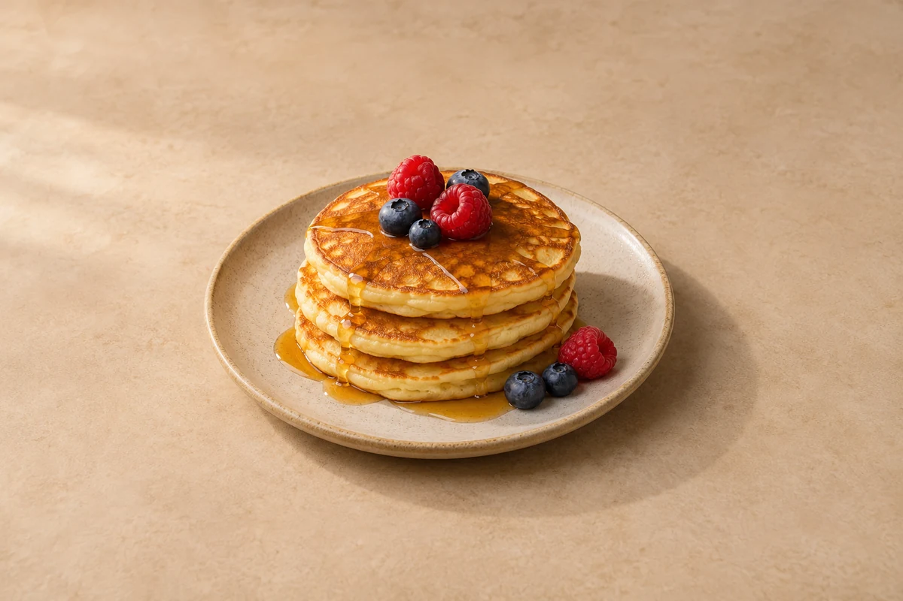

Breakfast & Brunch
Fluffy Pancakes
Soft, fluffy pancakes with berries and maple syrup. Serves 2.
Time to allow: 25 min total
Prep10 mins
Cook15 mins
people
Ingredient quantities update automatically

Ingredients
Method
Mix the dry ingredients
Mix the flour, baking powder, sugar and salt in a bowl.Mix the wet ingredients
Whisk the egg and milk together, then whisk in the melted, slightly cooled butter.Make the batter
Pour the wet mixture into the dry ingredients and stir just until combined. A few small lumps are fine. Leave for 5 minutes.Heat the pan
Lightly oil a non-stick frying pan over a medium-low heat.Cook the pancakes
Spoon small rounds of batter into the pan, leaving space between them. Cook for about 2 minutes until bubbles appear and the edges start to set. Flip and cook for 1–2 minutes until golden and cooked in the centre. Repeat with the remaining batter.Serve
Divide between plates and add the maple syrup and berries.
Tips & leftovers
Storage & leftovers
Cool plain pancakes on a rack, then refrigerate covered within 2 hours. Eat within 48 hours. Keep berries and maple syrup separate until serving.
Freezing
Freeze cooled pancakes separated with parchment in a sealed bag for up to 2 months for best quality. Defrost in the fridge before reheating; keep fruit toppings fresh.
Reheating
Reheat once in a low oven, loosely covered, or in a dry pan, turning until hot throughout. A microwave works but gives a softer surface.
Substitutions
Use your usual milk or an unsweetened plant drink. A little plain yoghurt alongside the fruit makes a tangier topping. Wholemeal flour changes fluffiness, so substitute only part at first.
Keeping leftovers safe
Cool cooked leftovers in small portions and refrigerate within 2 hours. Keep the fridge at 0–5°C and the freezer around −18°C. Freeze suitable leftovers promptly. Defrost fully in the fridge and use within 24 hours. Reheat only once, until steaming hot all the way through. Follow any shorter use-by or opened-pack instructions; using older cooked ingredients does not restart their storage time.
Food-safety guidance: Food Standards Agency: chilling and freezing · reheating leftovers.